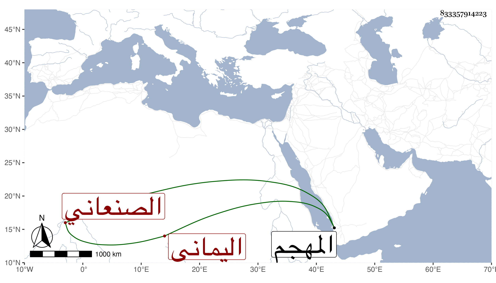

0902Sakhawi.DawLamic.ITO20230111-ara1.EIS1600.833357914223
Biography ID: 833357914223
650
علي بن أحمد الصنعاني اليماني . قال شيخنا في معجمه لقيته بالمهجم فأنشدني قصيدة رثى بها البرهان المحلي ومدح في آخرها ابنة الشهاب أولها :
| هي المنايا فلا تبقي على أحد | لا والد مشفق بر ولا ولد |
قال : ومن العجائب أن الشهاب مات في تلك السنة أعني سنة ست فمات الوالد والولد .
